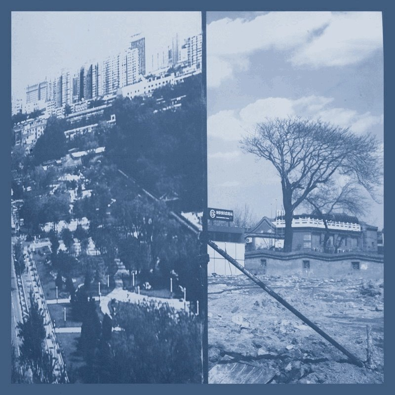

“Blueprints”

Joshua Neves is Assistant Professor of Modern Culture & Media at Brown University.
His research centers on comparative/global media, cultural theory, and media urbanism.
His current book project explores the role of media technologies in shaping urbanism,
development, and political society in Olympic era China.
Joshua Neves (Brown University)
Monday, April 22, 2013
“Blueprints”
“Blueprints”
Joshua Neves (Brown University)
This talk explores a cross section of “new” media practices in contemporary China, including planning, urban art, DV, civic billboards, and ephemeral banners or graffiti.
These conjunctures capture the dynamics of a shift from the image and experience of ruins, a dominant preoccupation in Mainland visual culture in the 1990s, to the cultural logic of the model or blueprint. In particular, Neves explores how overlapping digital transformations—in printing, design, videography, etc.—engender both new forms of social control and new capacities in political society.